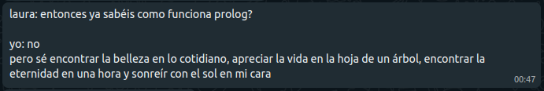

Created: 2025-04-05 sáb 22:42
Prolog is a language rooted in logic, and although there is no universal definition of it we can say that logic deals with "properties of" and "relations between":
imortal(X) :- woman(X).
woman(eddicirca).
%?- imortal(X).
%@ X = eddicirca.
Very simple, all data is represented by terms and terms are defined inductively. A term can be:
If we are unsure what something is, we can also ask prolog to help us!
%?- integer(1).
%@ true.
%?- atom(atom).
%@ true.
%?- atom(X).
%@ false.
%?- var(X).
%@ true.
The same with compound terms!
%?- functor(X, :-, 2).
%@ X = (_A:-_B).
%?- functor(1 + 1, F, N).
%@ F = (+), N = 2.
%?- f(a,g(X)) =.. [Name | Args].
%@ Name = f, Args = [a,g(X)].
A declarative language, we are concerned with stating what holds and less interested in how the specific implementation finds the solution…
length_list([], 0).
length_list([_ | Ls], N1) :- length_list(Ls, N2), N1 is N2+1.
%?- length_list([a,b,c], X).
%@ X = 3.
We are not computing the length of a list, we are defining a relation! With this relation we can also ask for a list of 3 elements or for any answer that satisfies…
%?- length_list(Ls, 3).
%@ Ls = [_, _, _] .
%?- length_list(Ls, X).
%@ Ls = [],
%@ X = 0 ;
%@ Ls = [_],
%@ X = 1 ;
%@ Ls = [_, _],
%@ X = 2 ;
%@ Ls = [_, _, _],
%@ X = 3 .
In the category of declarative languages we have functional programming languages and logic programming languages. A function is a restricted form of a relation and functional programming can be regarded as a restricted form of logical programming.
% Peano numbers
natnum(0).
natnum(s(X)) :- natnum(X).
%?- natnum(X).
%@ X = 0 ;
%@ X = s(0) ;
%@ X = s(s(0)) ;
%@ X = s(s(s(0))) .
Prolog can also be used to write big applications related to the web, optimization, verification, etc… The piece of code bellow is a simple http call.
:- use_module(library(http/http_open)).
:- use_module(library(lists)).
%?- http_open("https://news.ycombinator.com/", Stream, []),
% length(Cs, 20),
% maplist(get_char(Stream), Cs),
% string_chars(Str, Cs).
%@ Stream = <stream>(0x55fe18d3d580,0x55fe18d3d6e0),
%@ Cs = [<, h, t, m, l, ' ', l, a, n|...],
%@ Str = "<html lang=\"en\" op=\""".
It can also be used for applications related to security. Since in prolog a character is also an atom, we have a situation where data is also code. This allows for very good data manipulation capabilities which is very useful when writing cryptography protocols.
:- use_module(library(crypto)).
%?- Message = "Ola!!",
% ed25519_new_keypair(Pair),
% ed25519_sign(Pair, Message, Signature, []).
%@ Message = "Ola!!",
%@ Pair = "0Q\x2\\x1\\x1\0\x5\\x6\\x3\+ep\x4\\"\x4\ \x4\xÛ ...",
%@ Signature = "fd687c9b6611abe6fb2 ...".
A Prolog program is a set of predicates that define relations between their arguments. There is only one single language element, a clause:
head :- body.
This means:
if body holds, then head holds.
If the head always holds the body is not necessary!
Horn clauses, which is the subset of first order logic in which prolog happens, does not come with arithmetic! To address this, prolog has an impure predicate built-in called: is/2 which requires the second element to be instantiated…
factorial(0,1).
factorial(N,F) :- N>0, N1 is N-1, factorial(N1,F1), F is N*F1.
%?- factorial(23, F).
%@ F = 25852016738884976640000
%@ ; false.
The is/2 predicate is not reversible and does not really express an actual relation! To get trough this there are libraries that extend logic programming over multiple domains. CLP(ℤ) extends logic programming to integers allowing for relations over this domain.
:- use_module(library(clpz)).
fac(0, 1).
fac(N, F) :- N #> 0, N1 #= N - 1, F #= N * F1, fac(N1, F1).
%?- fac(N, 25852016738884976640000).
%@ N = 23
%@ ; false.
Yes, ! is also a predicate, and a special one… Like is/2, it is also impure and basically allows you to control the flow of computation.
sumNums([],0).
sumNums([X|Xs],Z) :- number(X), !, sumNums(Xs,Y), Z is X+Y.
sumNums([_|Xs],Z) :- sumNums(Xs,Z).
%?- sumNums([1,2,a,3], X).
%@ X = 6.
The !/0 predicate makes it impossible to flow from right to left. In this example, if the X is a number then the right side also holds, and if not it jumps directly to the last line.
Until now anytime we wrote the ,/2 we were specifying a logical conjunction (and) but what about the logical disjunction? In prolog the predicate that represents (or) is ;/2.
%?- true, false.
%@ false.
%?- true; false.
%@ true
%@ ; false.
It is important to note that one can also represent a disjunction in prolog with two separate predicates!
Using the !/0 predicate one can easily write the if then else structure! But the way it presents is not the prettiest…
% ifThenElse(X) :- If(X), !, Then(X).
% ifThenElse(X) :- Else(X).
We can substitute the !/0 predicate with →/2 which works as (If → Then) and with the disjunction we have:
% ifThenElse(X) :- If(X) -> Then(X); Else(X).
The example we had previously can clearly be re-written with the new predicates!
%Old version
sumNums([],0).
sumNums([X|Xs],Z) :- number(X), !, sumNums(Xs,Y), Z is X+Y.
sumNums([_|Xs],Z) :- sumNums(Xs,Z).
% New version
sumNums([],0).
sumNums([X|Xs],Z) :- number(X) -> sumNums(Xs,Y),
Z is X+Y; sumNums(Xs,Z).
%?- sumNums([1,h,o,l,2,a,3], X).
%@ X = 6.
In functional programming, functions are first class citizens and this means we can have higher order functions! Higher order functions are functions that do at least one of the following:
- Take one or more functions as arguments.
- Return a function as a result.
With logic programming the same happens but instead of functions we have higher order predicates!
A simple example of an higher order predicate is filter, which accepts a predicate as argument and a list and returns a new list with the elements that satisfy the predicate.
filter(_,[],[]).
filter(P,[X|Xs],[X|Ys]) :- Goal=..[P,X],
call(Goal), !, filter(P,Xs,Ys).
filter(P,[_|Xs],Ys) :- filter(P,Xs,Ys).
greaterThan2(X) :- X > 2.
%?- filter(greaterThan2, [1,2,3,4], X).
%@ X = [3,4].
Different languages have different approaches. We can compare imperative, functional and logic ways of writing the same function!
Summing two vectors with python will more or less show how it's done in the majority of the C like languages!
def sumVectors(xs, ys):
result = []
for i in range(0, min(len(xs), len(ys))):
result.append(xs[i] + ys[i])
if len(xs) < len(ys):
for i in range(len(xs), len(ys)):
result.append(ys[i])
if len(xs) > len(ys):
for i in range(len(ys), len(xs)):
result.append(xs[i])
return result
print(sumVectors([1,2,3,4], [5,6,7]))
Haskell is a language that is considered as "pure functional" as you can get. It does look a lot closer to prolog code than to python code!
:{
sumVectors :: [Int] -> [Int] -> [Int]
sumVectors [] [] = []
sumVectors xs [] = xs
sumVectors [] ys = ys
sumVectors [x] [y] = [x + y]
sumVectors (x:xs) (y:ys) = (+) x y : sumVectors xs ys
:}
sumVectors [1,2,3,4] [5,6,7]
| 6 | 8 | 10 | 4 |
Finally the logic programming version, where one defines predicates to achieve a goal.
sumVectors([], [], []).
sumVectors(Xs, [], Xs).
sumVectors([], Ys, Ys).
sumVectors([X], [Y|Ys], [Z|Ys]) :- !, Z is X + Y.
sumVectors([X|Xs], [Y], [Z|Xs]) :- !, Z is X + Y.
sumVectors([X|Xs], [Y|Ys], [Z|Zs]) :- !, Z is X + Y,
sumVectors(Xs, Ys, Zs).
%?- sumVectors([1,2,3,4], [5,6,7], R).
%@ R = [6,8,10,4].
Although it never reached a big status of popularity, prolog still strives on some specific industrial applications and on academia.
Hope you enjoyed and hope that you might try it! :)
